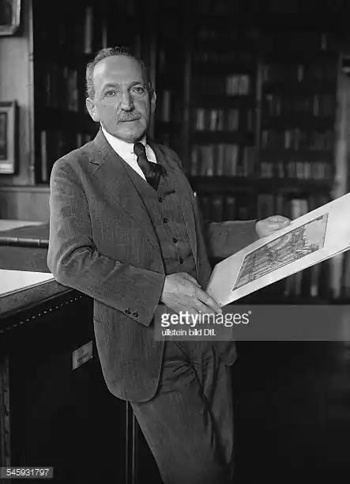
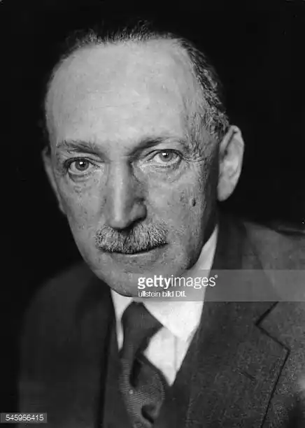

ЖАКОБ, Макс (Jacob, Max —11.07.1876, Кемпер, департамент Фіністер — 05.03.1944, концтабір Дрансі) — французький письменник і художник.Народився в єврейській сім'ї. У вісімнадцятирічному віці перебрався з Бретані в Париж. Тривалий час поневірявся, змінивши низку професій: був прикажчиком, акомпаніатором, секретарем, навіть "сестрою милосердя". На початку XX ст. зблизився з П. Пікассо, Г. Аполлінером, Ж. Браком, виступав апологетом кубізму в живописі та поезії. Близький друг Жакоба — Аполлінер писав: "Щоранку Макс Жакоб пише вірші, у другій половині дня відпочиває, займаючись живописом, а вечір приділяє друзям, приятелям і граціям".
Жакоб почав друкуватися із 1903 р. Перші твори Жакоба — дитячі казки "Король Кабуль і крихітка Говен" ("Le roi Kaboul et marmiton Gauvin", 1903), "Сонячний велетень" ("Le ge-ant till solell", 1904).У 1910-х pp. його помешкання (знаменитий будинок на вулиці Равіньян, 13) стало центром паризької богеми. 1915 р. Жакоб прийняв католицьку віру (хрещеним батьком був П. Пікассо). У результаті цього навернення з'явилася книга "Захист Тартюфа. Екстази, каяття совісті, сни, молитви, поеми і міркування наверненого у християнство єврея"("La Defense de Tartuffe...", 1919).
Ранні твори Жакоба поєднують гротеск і містику (сам поет вважав себе візіонером), фривольний анекдоті "життя святих". їм притаманні іронічне сприйняття світу і відчуття абсурдності людського існування. Ж. був певен того, що саме кубізм відкриває сучасній людині дорогу у "потойбічний світ". Експериментальна за стилістикою книга "Святий Маторель" ("Saint— Matorel", 1911) є своєрідним життєписом вигаданого святого, якому притаманні автобіографічні риси. У книгах "Містичні та бурлескні твори брата Матореля" ("Les Oeuvres mystiques et burlesques du frere Matorel", 1912), "Ріжок із гральними кістьми" ("Le cornet a des", 1917) та ін. Ж. звернувся до жанру поезії у прозі. У своїх поезіях Ж. поєднує християнські мотиви та фантастичні образи-міфи, широко застосовує "заумну мову", каламбури й алітерації ("Центральна лабораторія" — "Le laboratoire central", 1921; "Ті, що каються в рожевих трико" — "Les penitents en maillots roses", 1925). Після смерті Аполлінера (1918) Жакоб став натхненником нової генерації авангардистів — дадаїстів і сюрреалістів. Його книга "Поетичне мистецтво" ("Uart poetique", 1922) пропагує ірраціоналізм, закликає до відмови від сюжету та інших конструктивних елементів твору. У 20-х pp. вийшли друком романи Ж. "Філібют, або Золотий годинник" — ("Filibuth, ou La montre en or", 1922), "Ділянка Пушабалъ" ("Le terrain Bouchaballe", 1923). Друга світова війна застала Жакоба в абатстві Сен-Бенуа-сюр-Луар, де він мешкав понад 20 років. У період гітлерівської окупації Парижа Жакоб змушений був ходити з жовтою зіркою на руці — знаком його єврейського походження. Як єврей, він на початку 1944 р. потрапив у фашистський концтабір Дрансі (пересильний пункт, звідки відправляли в Освенцим, де загинули всі родичі Жакоба). Там він захворів і помер. Після війни за активної участі П. Пікассо було засноване товариство "Макс Жакоб". Воно друкує твори поета, аз 1951 р. вручає щорічні літературні премії за найкращу збірку поезій. Є. Васильєв